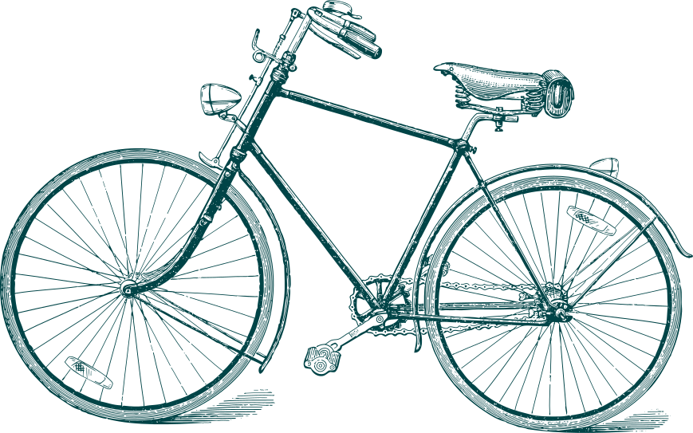
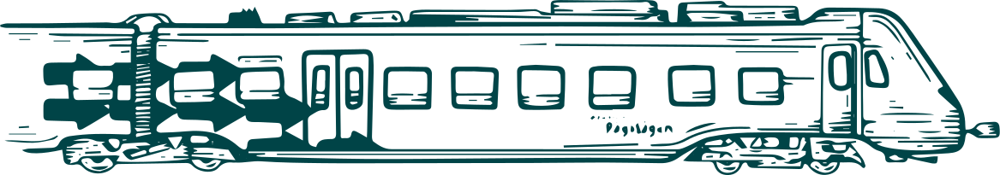
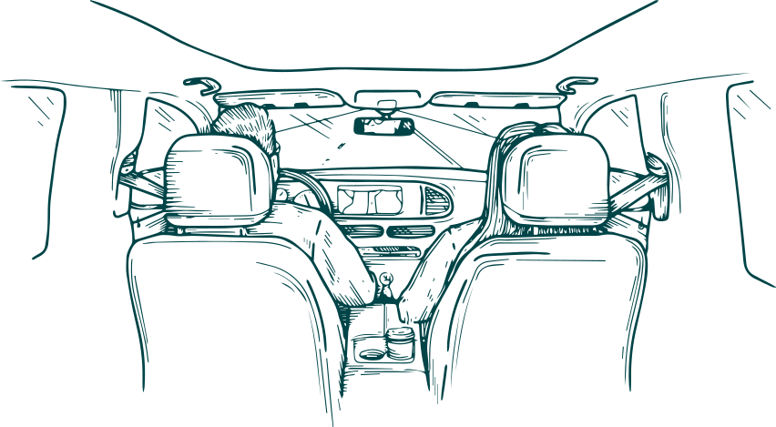
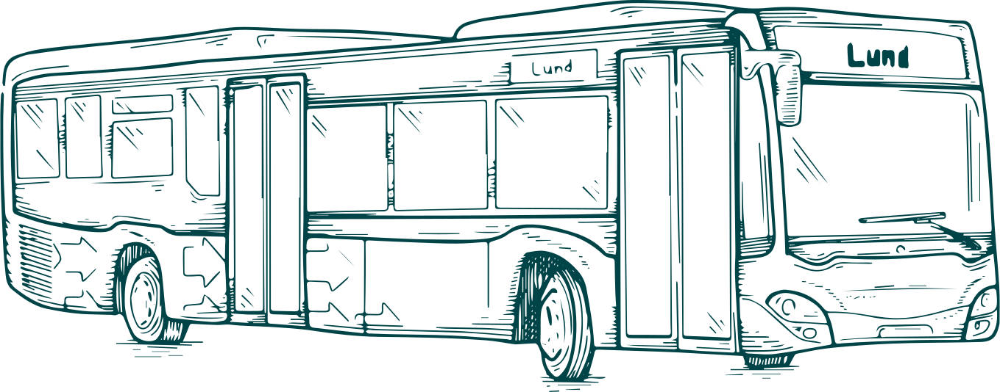

Vill du tänka om kring dina resor?
Se vad du har för olika möjligheter!

Tänk om du skulle växla upp din cykling
Du sparar pengar på att cykla, men cykling är så mycket mer! Att cykla är framför allt en insats för din hälsa, vardagsmotion gör dig stark både till kropp och knopp. Med cykeln kommer du hela vägen, från dörr till dörr, utan att riskera att hamna i bilkö. Och vill du inte cykla hela vägen kan du ofta cykla del av vägen, till din bästa hållplats där du kan ta kollektivtrafiken sista biten. Det finns nästan lika många olika sorters cyklar som det finns behov och livsstilar. Allt från elcyklar, landsvägscyklar och hybrider till lastcyklar, vikcyklar och elsparkcyklar. Vilken cykel passar ditt liv bäst?


Tänk om du skulle byta spår och tågpendla mer
Vill du ha en bättre ekonomi och hälsa som slutstation för dina resor? Då är det en bra idé att börja resa mer med tåg! För på köpet får du inte bara gratis vardagsmotion när du promenerar till och från stationen. Utan också en stund som du kan göra vad du vill med. En chans att läsa nyheter, planera middagen eller lyssna på din favoritpodcast. På tåget kan du även påbörja eller avsluta jobbdagen medan det skånska landskapet swishar förbi.
Tänk om du skulle minska på dina ensamma bilresor
Visste du att det genomsnittliga antalet personer i varje bil år 2021 var 1,4 personer? Det betyder att vi i Sverige bara använde 28 % av platserna i personbilarna, förutsatt att varje bil har fem säten. Men genom att samåka med en kollega, granne eller vän får du mer utrymme att umgås, och kan dessutom passa på att ta en tupplur som medpassagerare. Men bäst av allt är att ju fler personer som åker med i bilen, desto mindre blir både bränslekostnaderna och utsläppen. Snacka om win-win!


Tänk om du skulle hoppa på något nytt och busspendla mer
Nästa station: bättre hälsa och ekonomi! Ja, om du skulle resa med buss oftare skulle du spara in dyra bränslepengar, samt slippa både betala och leta parkering. Och genom att promenera eller cykla till och från busshållplatsen sätter du vardagsmotionen i rörelse. Visste du att kollektivtrafikresenärer faktiskt cyklar dubbelt så mycket och går tre gånger så mycket som bilister? Men det stannar inte där. Genom att åka buss får du dessutom en skön stund i vardagen att göra precis vad du vill med!
Tänk om vi skulle öka tempot på vår hållbarhetsresa
År 2030 ska Lund bli klimatneutralt. Men för att det ska gå behöver vi minska våra utsläpp av växthusgaser. Enligt Naturvårdsverket står utsläppen från just inrikesresorna för ungefär en tredjedel av Sveriges totala utsläpp. Dessutom svarar personbilarna för 62 % av all koldioxid som Sveriges transporter släppte ut år 2021. Transportsektorn är därför ett område som måste växlas ner snabbast.
Men det går att tänka om. Och därför kampanjar vi just nu för att få med fler Lundabor på tåget, bussen eller cykeln mot klimatmålen. Vi vill att fler ska pröva andra sätt att resa helt enkelt. Det handlar inte om att bilen inte behövs, utan att den ska användas mindre. Många som har provat att byta resvana upptäcker fördelarna och stannar kvar i det nya. Tänk om och prova cykeln, bussen, tåget!
Men det går att tänka om. Och därför kampanjar vi just nu för att få med fler Lundabor på tåget, bussen eller cykeln mot klimatmålen. Vi vill att fler ska pröva andra sätt att resa helt enkelt. Det handlar inte om att bilen inte behövs, utan att den ska användas mindre. Många som har provat att byta resvana upptäcker fördelarna och stannar kvar i det nya. Tänk om och prova cykeln, bussen, tåget!